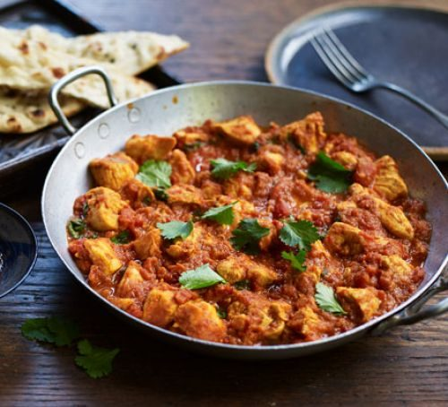

Curry

Description
Chicken curry or curry chicken is a dish originating from the Indian subcontinent.
It is common in the Indian subcontinent, Southeast Asia, Great Britain, and the Caribbean.
A typical curry from the Indian subcontinent consists of chicken stewed in an onion- and tomato-based sauce,
flavoured with ginger, garlic, tomato puree, chilli peppers and a variety of spices, often including turmeric,
cumin, coriander, cinnamon, and cardamom.
Ingredients
- Coriander, cumin, turmeric, fennel seeds, cinnamon, pepper, ground mustard,
ground cloves, cayenne pepper and salt
- Olive oil
- Fresh , garlic and ginger
- Low-sodium chicken broth
- Canned tomatoes
- Cornstarch
- Chopped cilantro
- Heavy cream
Steps
- Mix spices together
- Saute onion, garlic and ginger in a skillet
- Add broth and tomatoes, simmer.
- Blend mixture in a blender as directed then return to skillet.
- Season sauce then add chicken.